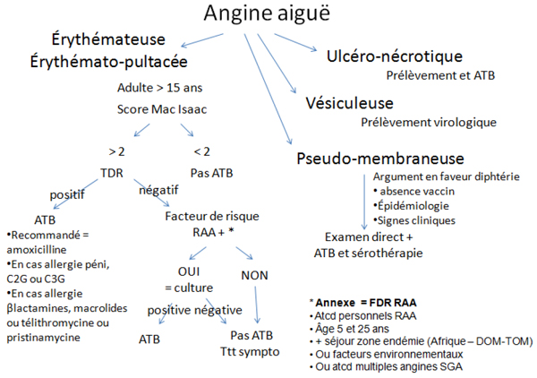

Bienvenue Sur Medical Education
Angines
Spécialité : infectieux / orl / pédiatrie /
Points importants
- Définition = infection des amygdales palatines voire du pharynx
- Etiologie infectieuse = origines virale majoritaire dans 50 à 90% des cas ou bactérienne (streptocoque ß hémolytique du groupe A = SGA)
- Rare chez adulte
- Test discriminant les angines à SGA = le TDR ou test de diagnostic rapide
- Morbi-mortalité corrélée à l'apparition de complications post-streptococciques des angines à SGA : RAA, GNA et complications septiques locales ou générales
- Seules les angines à SGA justifient un traitement antibiotique par amoxicilline (en dehors des très exceptionnelles infections à Corynebacterium diphteria, Neisseria gonorrhoeae et à germes anaérobies)
Présentation clinique / CIMU
SIGNES FONCTIONNELS
Spécifiques
- Fièvre
- Odynophagie - dysphagie
Non spécifiques
- Vomissements
- Céphalées
- Altération de l'état général
Signes d'étiologies
-
Angine à SGA :
- tableau aigu
- fièvre élevée
-
Angine virale :
- tableau progressif
- fièvre peu élevée
- cortège infectieux ORL viral (rhinorrhée, toux, enrouement)
CONTEXTE
Terrain
- Enfant > 3 ans avec pic d'incidence entre 5-15 ans, rare chez adulte (à tout âge)
- Immunodéprimé
Antécédents
-
ORL :
- angines récidivantes
- angine à SGA
- sinusite / amygdalite chronique
- Généraux : RAA
- Allergique : pénicilline
Traitement
- Prise récente d'antibiotiques (dose / durée)
Circonstances de survenue
- Epidémie (hiver et début du printemps)
- Voyage en zone d'endémie (Afrique, DOM-TOM)
- Statut vaccinal en particulier diphtérie / DTPolio
- Contage
Facteurs déclenchants
- Contage
- Contact orogénital
- Infection virale ORL
Facteurs risque de RAA
- Antécédent personnel de RAA
- Et âge 5-25 ans
- Et séjours en régions d'endémie de RAA
- Ou facteurs environnementaux (conditions sociales, sanitaires et économiques, promiscuité, collectivités fermées)
- Ou ATCD multiples d'angines à SGA
EXAMEN CLINIQUE
Examen général
- Etat général - hydratation
- Hyper - hypothermie
- Etat hémodynamique et signes de choc périphériques
- Évaluation fonctions respiratoires hautes
- Clinique en rapport avec terrain immunodéprimé
Signes spécifiques - examen buccal
-
Angine érythémateuse (la plus fréquente) ou « angine rouge » :
- pharynx et amygdales érythémateux avec hypertrophie amygdalienne
-
Angine érythémato-pultacée ou « angine blanche » :
- oropharynx érythémateux avec exsudat pultacé (enduit gris jaunâtre, punctiforme ou en traînées, mince et friable, facilement dissocié, ne débordant pas la surface amygdalienne)
-
Angine vésiculeuse :
- exsulcération revêtement épithélial, succédant à une éruption vésiculeuse fugace au niveau des amygdales et piliers
-
Angine ulcéreuse :
- ulcération unilatérale, profonde, recouverte d'un enduit nécrotique
-
Angine pseudo-membraneuse (ou à fausses membranes) :
- fausse membrane nacrée, pouvant déborder la région amygdalienne sur la luette, le voile et ses piliers
Signes d'étiologies - examen buccal
- Aspect de l'oropharynx n'est pas prédictif de l'angine à SGA
-
Angine « rouge » :
- virale
- angine à SGA : signe pathognomonique = purpura voile
- 1er signe d'une scarlatine (angine érythémateuse + énanthème avec langue « framboisée »)
- maladie infectieuse d'origine microbienne
-
Angine « blanche » ou érythémato-pultacée :
- virale
- angine à SGA
- streptocoque hémolytique non A
- staphylocoque
- pneumocoque
- Pasteurella tularensis (tularémie)
- Toxoplasma gondii (toxoplasmose)
-
Angine pseudomembraneuse :
- mononucléose Infectieuse (primo-infection à virus Epstein-Barr) : angine érythémato-pultacée + purpura du voile du palais + fausses membranes grisâtres d'aspect nécrotique
- diphtérie (Corynebacterium diphtheriae ou Corynebacterium ulcerans) : fausses membranes blanchâtres, épaisses, adhérentes et hémorragiques + paralysie vélopalatine
- autres, rares : staphylocoques, streptocoques, pneumocoques ou autres syndromes mononucléosiques (CMV, HIV)
-
Angine ulcéreuse et nécrotique :
- angine de Vincent : mauvais état bucco-dentaire, dysphagie unilatérale, haleine fétide
- chancre syphilitique : ulcération superficielle indolore siégeant le plus souvent à gauche + induration
-
Angine vésiculeuse :
- angine herpétique - virus herpès simplex : vésicules unilatérales)
- herpangine (virus coxsackie groupe A) : vésicules bilatérales sur le voile du palais + luette + pilier loge amygdalienne ± gingivo-stomatite herpétiforme)
-
Autres types = angines gangréneuses, nécrotiques :
- germes anaérobies sur terrain débilité (diabète, insuffisance rénale, hémopathies)
Signes régionaux
-
Adénopathies cervicales :
- consistante unique (angine à SGA)
- polyadénopathies cervicales diffuses (MNI ou HIV)
- adénopathie principale avec adénopathies satellites indolores (chancre syphilitique)
Signes généraux
-
Cortège viral ORL :
- toux + coryza
- enrouement
- diarrhée
- conjonctivite (angine virale)
- Zona du V ou du IX (angine VZV)
- Dyspnée laryngée (diphtérie)
- Hépatosplénomégalie (MNI)
- Asthénie +++ (MNI, diphtérie)
- Rash cutané de type urticaire ou roséole ou maculo-papuleux (primo-infection VIH)
- Rash scarlatiniforme (angine à SGA)
- Rash maculopapulaire après prise de pénicilline (MNI)
Recherche de complications locorégionales
- Trismus réflexe + adénopathies cervicales + haleine fétide + voix sourde et nasonnée associée à une asymétrie de l'oropharynx + bombement du voile du palais + oedème de la luette (phlegmon amygdalien)
- Inflammation de la région faciale (cellulite cervico-faciale)
- Dysphagie, dyspnée inspiratoire fébrile (abcès rétropharyngé)
- Douleur à la palpation du sinus maxillaire - écoulement pharyngé postérieur (sinusite maxillaire)
- Otalgie (OMA)
- Placard inflammatoire rétro-auriculaire (mastoïdite)
EXAMENS PARACLINIQUES SIMPLES
-
En cas de disponibilité, test de diagnostic rapide :
- test discriminant entre angines à SGA et autres angines, recommandé chez tout patient ayant une angine érythémateuse ou érythémato-pultacée
- réalisable en box (prélèvement de gorge), résultat rapide (5 minutes)
- sensibilité 95% - spécificité 95%
- réalisation si score de Mac Isaac > ou = 2
CIMU
Situations cliniques
- Situation A = angine non compliquée sans signes généraux
- Situation B = angine non compliquée avec signes généraux
- Situation C = angine compliquée (présence d'une complication locorégionale) nécessitant recours ORL en urgence
CIMU
- Situation A = tri 5
- Situation B = tri 4
-
Situation C = tri 3
Signes paracliniques
- Situation A = angine non compliquée sans signes généraux
- Situation B = angine non compliquée avec signes généraux
- Situation C = angine compliquée (présence d'une complication locorégionale) nécessitant recours ORL en urgence
BIOLOGIE
Situation A
- Prélèvement pharyngé en cas de test de diagnostic rapide négatif et facteur de risque de RAA (cf. chapitre facteurs déclenchants) et en cas d'allergie aux béta-lactamines
-
En fonction des tableaux cliniques :
- Cas de zona de l'adulte jeune : recherche MST avec sérologie VIH
- En cas de chancre syphilitique : TPHA-VDRL et sérologie VIH + prélèvement pharyngé avec mise en évidence du tréponème (rare) + dépistage partenaire(s)
Situation B
-
A discuter selon situation clinique :
-
présence de signes de déshydratation :
- ionogramme sanguin - urée - créatinine (troubles natrémie - fonction rénale)
-
si fièvre :
- bilan infectieux standard
- NFS (hyperleucocytose à PNN)
- CRP
- hémocultures
-
présence de signes de déshydratation :
-
En fonction des tableaux cliniques :
-
MNI :
- NFS : syndrome mononucléosique avec hyperlymphocytose avec des lymphocytes de grande taille hyperbasophiles
- MNI-test
- à discuter, bilan hépatique complet (cytolyse hépatique)
-
en cas de diphtérie :
- prélèvement pharyngé envoyé immédiatement au laboratoire à la recherche du bacille de Loeffler puis mise en culture
-
MNI :
Situation C
-
Phlegmon amygdalien :
- bilan infectieux : NFS - CRP
- ± ponction - aspiration (pour bactériologie) par aiguille fine par ORL sous ALR
- bilan préopératoire : TP/TCA - ionogramme sanguin - urée - créatinine - groupe sanguin 1ère détermination - RAI
- Cellulite faciale
- Abcès rétropharyngé
- Mastoïdite
- En cas sinusite maxillaire, OMA : pas de biologie
IMAGERIE
Situation A : pas d'imagerie
Situation B : pas d'imagerie
Situation C :
- En cas de suspicion abcès rétro-pharyngé ou cellulite de la face : TDM cervico-thoracique avec injection
- En cas de suspicion de sinusite maxillaire : radiographie des sinus de face et de profil ± TDM facial à distance
- En cas de suspicion mastoïdite : TDM du rocher
Diagnostic étiologique
Virus (50 à 90% des cas)
- Adénovirus (5%)
- Rhinovirus
- Virus parainfluenzae
- Herpes simplex (5%)
- Epstein- Barr virus
- CMV
- VIH
Bactéries
- Streptocoque béta-hémolytique groupe A (15% angines)
- Streptocoque Groupe C, G et F (10%)
- Arcanobacterium (Corynebacterium) hemolyticus (5%) : scarlatine-like
- Mycoplasma pneumoniae
- Chlamydia pneumoniae
- Neisseria gonorrhoeae
- Haemophilus Influenzae
- Diphteria Corynebacterium
-
Autres = Francisella tularensis, Yersinia, Corynebacterium ulcerans
Diagnostic différentiel
- Cancer de l'amygdale : ulcération amygdalienne persistante
- Angine de Duguet (dans tableau fièvre typhoïde) : ulcérations superficielles longitudinales et indolores des piliers antérieurs du voile du palais
- Allergie
- RGO
- Épiglottite
- Brûlure par toxiques chimiques
- Aphtose (maladie de Behçet)
- Zona pharyngien (atteinte du nerf glosso-pharyngien)
-
Manifestations buccopharyngées d'une hémopathie, conséquence d'une neutropénie
Traitement
- Situation A = angine non compliquée sans signes généraux
- Situation B = angine non compliquée avec signes généraux
- Situation C = angine compliquée (présence d'une complication locorégionale) nécessitant recours ORL en urgence
Situation A et test de diagnostic rapide négatif = angine virale
- Réhydratation per os
- Antalgiques de pallier I ou II per os
- En cas de dysphagie intense, application locale pharyngée, en dehors des repas, de gel de xylocaïne
-
En cas de chancre syphilitique :
- benzathine-pénicilline G 2,4 millions unités IM en injection unique
- en cas d'allergie pénicilline : doxycycline 100mg x 2 / jour pendant 15 jours
- en cas de patient VIH + : benzathine-pénicilline G 2,4 millions unités x 1 / sem pendant 3 semaines
Situation A et test de diagnostic rapide positif = angine à SGA
- Réhydratation per os
- Antalgiques de pallier I ou II per os
- En cas de dysphagie intense, application locale pharyngée, en dehors des repas, de gel de xylocaïne
-
Traitement spécifique = à instaurer dans les 9 jours suivants l'apparition des signes :
- amoxicilline adulte 1 gx 2/ j pendant 6 jours
-
en cas d'allergie aux pénicillines sans allergie aux céphalosporines :
- céfuroxime-axétil 250 mg x 2/ j pendant 4 jours
- proxétil 100 mg x 2/ j pendant 5 jours
- céfotiam-hexétil 200 mg x 2/ j pendant 5 jours
-
en cas d'allergie aux blactamines : macrolides ou kétolides après réalisation d'un prélèvement pharyngé en raison du taux de résistances élevé des SGA (16-31%)
- azithromycine 500 mgx1/j pendant 3 jours
- josamycine 1 gx2/j pendant 5 jours
- télithromycine 800 mgx1/j pendant 5j
- ou pristinamycine 1gx2/jour pendant ³ 8 jours
Situation B (angine non compliquée avec signes généraux)
-
Mesures symptomatiques :
- réhydratation IV
- antipyrétiques IV
- antalgiques pallier II, rarement pallier III
- en cas de dysphagie intense, application locale pharyngée, en dehors des repas, de gel de xylocaïne
- à jeun, puis reprise progressive de l'alimentation liquide puis solide
-
Traitement spécifique :
- même schéma d'antibiothérapie que la situation A - en dehors du tableau ORL angine virale
-
en cas de diphtérie :
- sérothérapie antidiphtérique
- antibiothérapie par pénicilline G 50 000 à 100 000UI/kg/j toutes les 6 à 8 heures pendant 14 jours (si allergie, érythromycine 1g en IV en 60 min 2 fois/j
- isolement respiratoire sans attendre les résultats bactériologiques
- IOT en cas de détresse respiratoire
-
en cas d'angine de Vincent :
- pénicilline amoxicilline 1g en IV en 30 à 60 min
- ± métronidazole 1g en IV en 30 à 60 min par 500mg
Situation C (angine compliquée)
- Nécessite le recours ORL en urgence
-
Phlegmon amygdalien :
-
antibiothérapie
- amoxicilline - acide clavulanique 1g IV en 30 min
- ou C3G céftriaxone 1 à 2 g en IV en 5 à 15 min
- + métronidazole 1g en IV en 30 à 60 min par 500mg
- chirurgie ORL pour simple ponction - aspiration ou incision - drainage si abcès collecté (incision verticale du pilier antérieur, suivie d'un débridement à la pince)
-
antibiothérapie
- Cellulite cervico-faciale
- Abcès rétro-pharyngé
- Mastoïdite
-
Exceptés = Sinusite, OMA
Surveillance
Situation A (angine non compliquée sans signes généraux)
- Clinique : tolérance clinique
- Paraclinique : pas de surveillance
Situation B (angine non compliquée avec signes généraux)
-
Clinique :
- tolérance clinique
- en cas de diphtérie, surveillance paramètres respiratoire (SpO2 - FR) + dyspnée + signes de lutte respiratoire
- Paraclinique : pas de surveillance
Situation C (angine compliquée)
Phlegmon amygdalien, cellulite face, abcès rétro-pharyngé, sinusite, OMA, mastoïdite
-
Clinique :
- douleur/h
-
T°/4h
Devenir / orientation
- Situation A = angine non compliquée sans signes généraux
- Situation B = angine non compliquée avec signes généraux
- Situation C = angine compliquée (présence d'une complication locorégionale) nécessitant recours ORL en urgence
CRITERES DE SORTIE DU SAU
- Situation A = angine virale - à SGA sans signes généraux
- Situation B = situation angine virale avec signes généraux à discuter
- Situation C = sinusite maxillaire, OMA
CRITERES D'ADMISSION
Situation B (angine non compliquée avec signes généraux)
- NB : si suspicion de diphtérie : isolement respiratoire immédiat nécessaire - maladie à déclaration obligatoire DDAS (en cas d'isolement Corynebacterium diphtheriae ou Corynebacterium ulcerans et mise en évidence de la toxine)
Situation C (angine compliquée)
- En service ORL et/ou soins intensifs
ORDONNANCE DE SORTIE
- (cf traitement)
RECOMMANDATIONS DE SORTIE
Situation A (angine non compliquée sans signes généraux)
- Reconsulter en ORL ou aux urgences en cas de persistance des symptômes après 72h d'antibiothérapie bien conduite et en cas d'échec clinique
- En cas d'angine à SGA, les patients ne sont plus contagieux 24h après le début du traitement antibiotique (évolution favorable en 3-4 jours)
- Respecter la posologie (dose et nombre de prises journalières) et la durée du traitement - pas d'automédication par AINS, ni corticoïdes, ni aspirine (risque de syndrome de Reye dans la situation A avec test de diagnostic rapide négatif)
-
Surveillance des complications à distance d'une angine à SGA :
-
glomérulonéphrite aiguë :
- 1/100.000 angines non traitées
- délai entre 10 à 20 jours
- prévoir bandelette urinaire à 3 semaines (recherche protéinurie)
-
RAA :
- 1/400 angines non traitées
- délai entre 15 à 20 jours = relation inverse entre gravité de l'atteinte articulaire et risque de développement d'une atteinte cardiaque
- surveillance par le médecin traitant de signes articulaires (poly / monoarthrites) et apparition d'un souffle cardiaque (insuffisance préférentiellement mitrale)
-
exceptionnelles :
- chorée de Sydenham
- nodosités de Meynet
-
glomérulonéphrite aiguë :
- En cas de chancre syphilitique et sérologie VIH positive, dépistage et traitement des partenaires
- Indication à une amygdalectomie (à distance de l'épisode aigu sans urgence) en cas d'angine à répétition (= 4/an), pathologies obstructives de l'oropharynx (syndrome d'apnée sommeil)
Situation B (angine non compliquée avec signes généraux)
- En cas de phlegmon amygdalien, à distance, indication d'une amygdalectomie
- En cas d'angine de Vincent, à distance, soins dentaires
-
En cas de cas avéré de diphtérie (isolement de Corynebacterium diphtheriae ou Corynebacterium ulcerans et mise en évidence de toxine) :
-
remise à jour de la vaccination antidiphtérique dT
- à concentration réduite préconisée chez une personne en contact étroit
- à concentration normale chez les enfants : sauf si on peut retrouver une vaccination avec au moins les doses, dont la dernière date de moins d'un an, sinon doses additionnelles pour compléter la protection vaccinale
-
traitement prophylactique par érythromycine quel que soit le statut vaccinal
-
remise à jour de la vaccination antidiphtérique dT
Mécanisme / description
Angine
- Transmission par voie aérienne
- Incubation 2-5 jours
- Invasion locale par production de protéases et de toxines extra-cellulaires
Rhumatisme articulaire aigu
- Mécanisme encore incertain
- Certaines protéines de membrane du SGA sont similaires aux antigènes des sarcomères myocardiques et des valves cardiaques
- Réponse immunitaire retardée lors d'une angine à SGA sur structures cibles (myocarde - valves cardiaques)
- Production de toxines et réponse immunitaire anormale contre l'hôte
Glomérulonéphrite aiguë
- Mécanisme encore incertain
- Formation de complexes antigène-anticorps contenant antigène streptococcique
- Affinité pour les glomérules rénaux
- Dépôt au niveau des glomérules rénaux en raison de la taille des complexes
-
Activation du complément et réaction inflammatoire locale
Algorithme
 _903 Algorithme Algorithme : angine aiguë
Bibliographie
- Recommandations de l'AFSSAPS 2005 : infections des voies respiratoires hautes, Christian Chidiac
- Recommandations pour l'antibiothérapie par voie générale en pratique courante dans les infections respiratoires hautes, AFSSAPS 2005. www.orl-france.org
- Guide des vaccinations, édition 2006, dossier Varia, www.inpes.sante.fr
- Le Pajolec C., Angines, p. 1248 - 1250 in Urgences médico-chirurgicales adulte Carli, Riou, Télion - 2e édition, édition Arnette
-
-
-
-
Auteur(s) : Hélène BELLANGER, Albéric GAYET